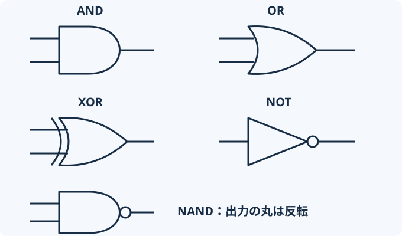

このページで学ぶこと
- AND・OR・XOR・NOT・NANDの違いを説明できる。
- 入力の組合せと出力を、真理値表で確かめられる。
- ORとXORの「両方が1」の違いを見分けられる。
- 複数bitにも、同じ演算を桁ごとに適用できる。
1.まずイメージを掴む
「鍵がある」と「暗証番号が合っている」。この両方が必要な扉を考えてみましょう。
条件を満たす状態を1、満たさない状態を0とすると、鍵と暗証番号を入力し、扉を開けるかどうかを出力できます。
条件のつなぎ方で、答えが変わる
- AND：鍵があり、暗証番号も合っているときだけ開く。
- OR：鍵か暗証番号の少なくとも一方が合えば開く。
- XOR：2つの条件のうち、片方だけを満たすと1になる。
このように、0と1を入力して0か1を得る計算を論理演算と呼びます。
扉は条件をイメージするための例です。実際の認証方式を再現するものではありません。
2.仕組みを理解する
まずは1bitずつ考える
入力をAとB、出力をYと呼びます。AとBがそれぞれ0か1なら、入力は00・01・10・11の4通りです。
| A | B | AND | OR | XOR | NAND |
|---|---|---|---|---|---|
| 0 | 0 | 0 | 0 | 0 | 1 |
| 0 | 1 | 0 | 1 | 1 | 1 |
| 1 | 0 | 0 | 1 | 1 | 1 |
| 1 | 1 | 1 | 1 | 0 | 0 |
入力の全組合せと出力を並べた表が真理値表です。単語の意味を覚えるだけでなく、4通りを試して確かめられます。
NOTは1つの入力を反転する
NOTは入力が0なら1、1なら0を出します。NANDはANDの結果にNOTを適用した演算です。例えばA=1、B=1なら、ANDは1、NANDは0です。
ORとXORの違い：両方が1のとき、ORは1、XORは0です。XORは「どちらか一方だけ」と読みましょう。
論理ゲートの形も見てみよう
演算を行う回路の部品を論理ゲートと呼びます。図の入力は左、出力は右です。出力側の小さな丸は、値を反転する印です。

3.触ってみる
まず「両方が1なら出力はいくつか」を予想し、ORとXORを比較してみましょう。
入力を変えて、出力を確かめる
予想：A=1、B=1のとき、ORとXORは同じ結果になるでしょうか？
実線は1、破線は0。数値のラベルでも状態を確認できます。
A=0、B=0 → AND → Y=0
両方が1のときだけ1になります。
| A | B | Y | 入力位置 |
|---|
自分で確かめよう
- ANDで4通りの入力を試す。
- A=1、B=1のままORとXORを切り替える。
- NOTでは入力が1つになることを確かめる。
- ANDとNANDの出力が必ず反対になるか比較する。
4.試験ではこう問われる
複数bitなら、各桁に同じルールを使う
4bitの1010と1100をANDしてみます。対応する桁同士で計算します。
1010 AND 1100 = 1000
左から、1 AND 1は1。0 AND 1は0。1 AND 0は0。0 AND 0は0です。
ANDは、必要なbitだけを残す「マスク」に使えます。例えば1010 AND 0011 = 0010なら、上位2bitを0にし、下位2bitを残します。
式は内側から：NOT (A AND B)では、まずANDを計算してから反転します。(NOT A) AND Bとは違います。
XORは同じbit同士なら0、異なるbit同士なら1です。後のデータ比較や暗号の学習でも、この性質が土台になります。
5.確認問題
全4問です。答え合わせの後に理由を読み、理解を確かめましょう。
教材用のオリジナル問題です。4問すべて回答すると直近の成績を記録します。
0 / 4問回答
学習を振り返る
「両方」「少なくとも一方」「片方だけ」「反転」の違いを、自分の言葉で説明できそうでしょうか。次は論理ゲートをつなぎ、足し算と値の保持を確かめます。
理解できたら学習完了を記録してください。確認問題の全問正解は条件ではありません。いつでも未完了に戻せます。